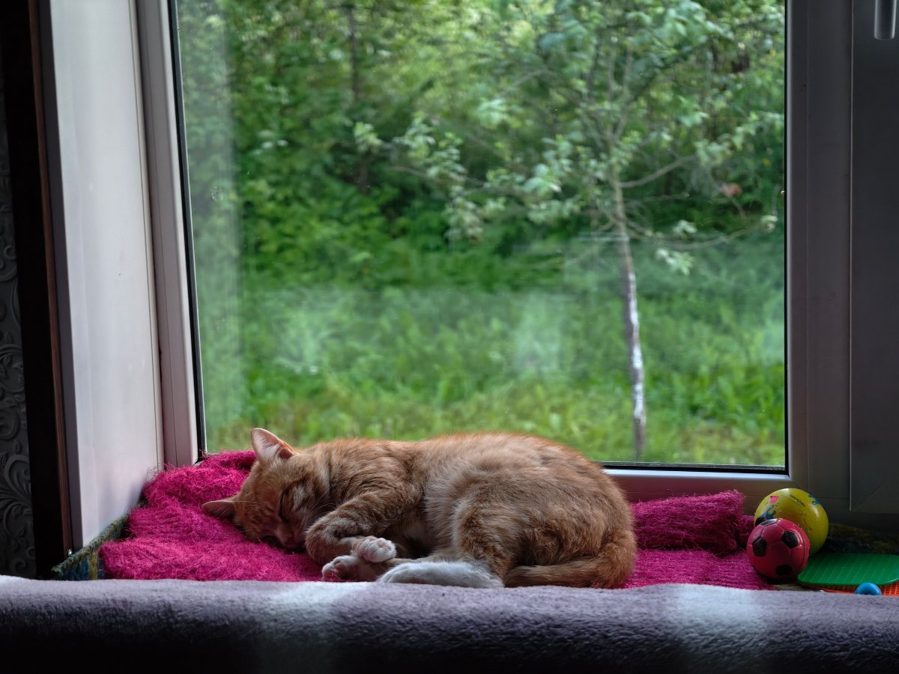
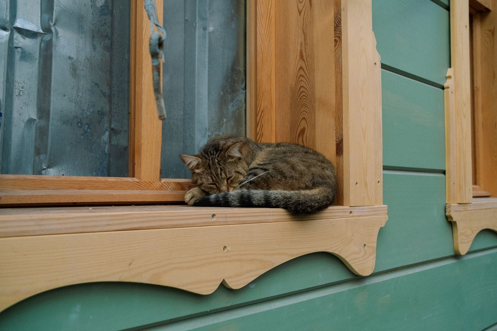
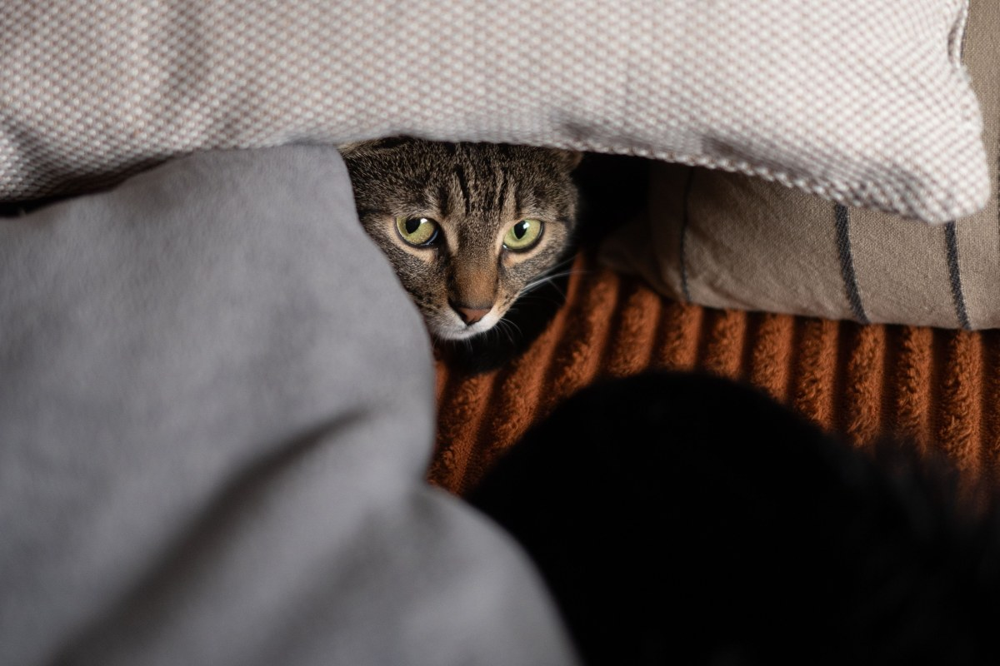
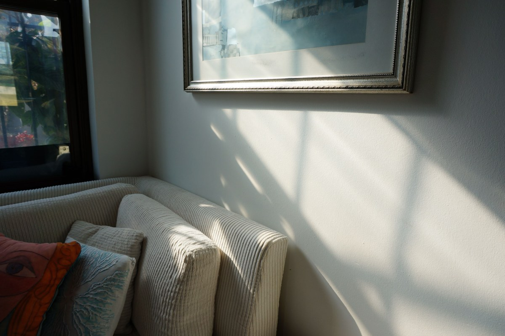
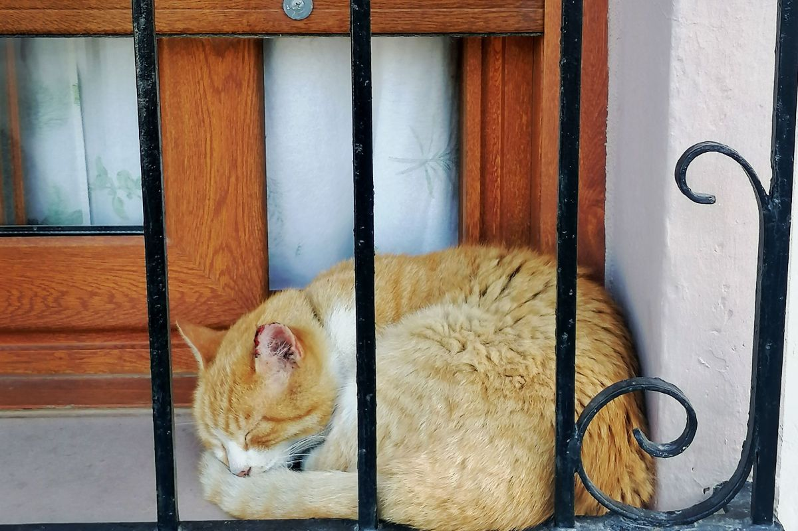

La Florida · Santa Raquel 10202
Una hora con menos bulla, para el que tiembla.
Clínica Veterinaria San Nicolás: 208 reseñas en La Florida y abierta todos los días de 10 a 20.
- 208reseñas en Google
- 7días a la semana, de 10 a 20
- 2012el año en que registró su dominio
- 0páginas en él: veterinariasannicolas.cl está apagado
La hora tranquila
Para el gato que se esconde y el perro que tiembla
De 10 a 11, de 15 a 16 y de 19 a 20: las horas con menos gente, de ejemplo.
Transportadora tapada
Una manta encima: lo que no ve, no lo asusta.
Justo a la hora
Llegar muy antes alarga la espera. Sin ayuno, salvo que te lo indiquen.
Avisa al llamar
Así se intenta que espere sin cruzarse con otros animales.
La clínica confirma sus horas tranquilas. Sin sedantes: eso lo decide el veterinario.
Menos bulla, menos miedo.
Qué se atiende
Lo que cuentan en sus reseñas
-
Hospitalización
Con visitas
Y videos del paciente, según una reseña.
-
Consulta
Te explican
La situación y las alternativas.
-
Derivación
Si otro lo hace mejor
Te lo dicen, como cuentan en una respuesta.
-
Gatos
Sin apuro
Para los que se esconden.
-
Perros
Controles
La visita de siempre.
-

Todos los días
Domingo incluido
De 10 a 20.
Hospitalización y derivación salen en sus reseñas y respuestas; lo demás lo confirma la clínica.
«Aquí sí hay vocación y humanidad».
Una reseña de Google
Sin apuro
Siestas, mantas y transportadoras




Fotos de referencia: ninguna es de la clínica.
Dónde está
Santa Raquel 10202, La Florida
- Teléfono
- (2) 2291 1009
- Todos los días
- 10:00–20:00
- Reseñas
- 208 en Google
- Dominio
- veterinariasannicolas.cl
Abre todos los días, domingos incluidos.
Santa Raquel 10202 Abrir en Google Maps
Para San Nicolás
Qué es real y qué falta
Lo verificado
Dirección, teléfono, horario, reseñas y el dominio a su nombre desde 2012, al 13-09-2026.
Lo de ejemplo
Las horas tranquilas, los consejos y las fotos.
Lo que falta
Encender el dominio: veterinariasannicolas.cl es suyo desde 2012 y hoy no muestra nada.